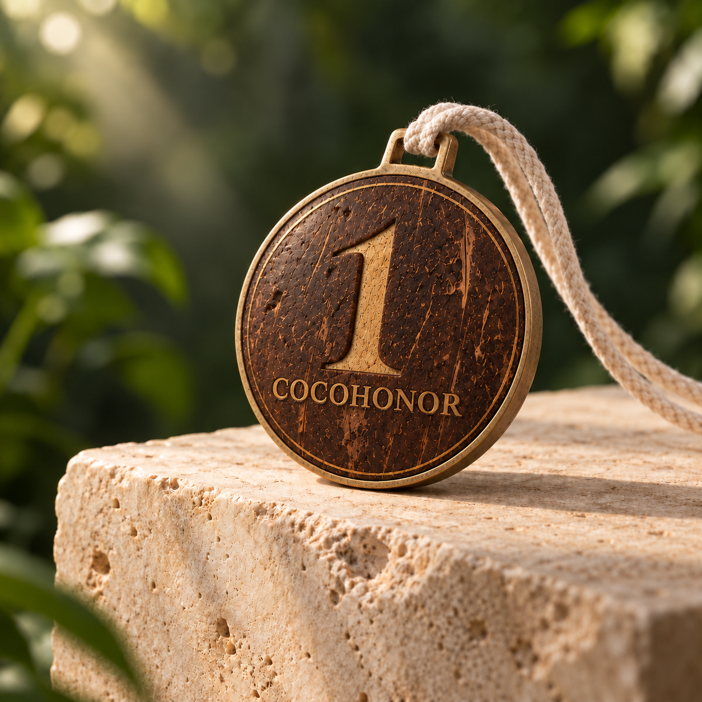

A CocoHonor concept
Honor,
given a second life.
A new idea for a meaningful material: coconut shell, reimagined as a keepsake medal that carries its story with it.
Early concept · material and product still in development

OBJECT STUDY · 001CONCEPT RENDER
Made withmeaningin mind
A different kind of recognition
Not just what it is.
What it carries.
We’re exploring a medal with a beginning before the award: a material with a past, shaped with care, made to mark a moment worth remembering.
Start with the story ↗The CocoHonor journey
Follow the idea
from source to story.
A guided route through the material, the object we’re imagining, and the people we hope to build it with.
A vision in progress
Good stories are
made together.
We’re shaping the first chapter and looking to learn from thoughtful material, craft, and event partners.
Explore partnership ↗